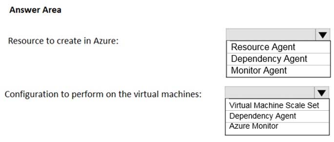
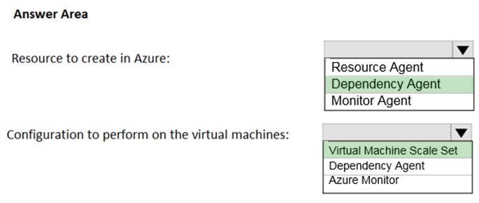

You manage a solution in Azure.
You must collect usage data including MAC addresses from all devices on the network.
You need to recommend a monitoring solution.
What should you recommend?
Correct Answer:
B
A network security group (NSG) includes rules that allow or deny traffic to a virtual network subnet, network interface, or both. When you enable diagnostic logging for an NSG, you can log the following categories of information:
Event: Entries are logged for which NSG rules are applied to VMs, based on MAC address. The status for these rules is collected every 60 seconds.
Rule counter: Contains entries for how many times each NSG rule is applied to deny or allow traffic.
References:
https://docs.microsoft.com/en-us/azure/virtual-network/virtual-network-nsg-manage-log
A partner manages on-premises and Azure environments. The partner deploys an on-premises solution that needs to use Azure services. The partner deploys a virtual appliance.
All network traffic that is directed to a specific subnet must flow through the virtual appliance.
You need to recommend solutions to manage network traffic.
Which two options should you recommend? Each correct answer presents a complete solution.
NOTE: Each correct selection is worth one point.
Correct Answer:
CD
C: Forced tunneling lets you redirect or "force" all Internet-bound traffic back to your on-premises location via a Site-to-Site VPN tunnel for inspection and auditing.
This is a critical security requirement for most enterprise IT policies. Without forced tunneling, Internet-bound traffic from your VMs in Azure always traverses from
Azure network infrastructure directly out to the Internet, without the option to allow you to inspect or audit the traffic.
Forced tunneling in Azure is configured via virtual network user-defined routes.
D: ExpressRoute lets you extend your on-premises networks into the Microsoft cloud over a private connection facilitated by a connectivity provider. With
ExpressRoute, you can establish connections to Microsoft cloud services, such as Microsoft Azure, Office 365, and Dynamics 365.
Connectivity can be from an any-to-any (IP VPN) network, a point-to-point Ethernet network, or a virtual cross-connection through a connectivity provider at a co- location facility. ExpressRoute connections do not go over the public Internet. This allows ExpressRoute connections to offer more reliability, faster speeds, lower latencies, and higher security than typical connections over the Internet.
References:
https://docs.microsoft.com/en-us/azure/vpn-gateway/vpn-gateway-forced-tunneling-rm https://docs.microsoft.com/en-us/azure/expressroute/expressroute-introduction
Note: This question is part of series of questions that present the same scenario. Each question in the series contains a unique solution that might meet the stated goals. Some question sets might have more than one correct solution, while others might not have a correct solution.
After you answer a question in this section, you will NOT be able to return to it. As a result, these questions will not appear in the review screen.
You are migrating an on-premises application to Azure. One component of the application is a legacy Windows native executable that performs image processing.
The image processing application must run every hour. During times that the image processing application is not running, it should not be consuming any Azure compute resources.
You need to ensure that the image processing application runs correctly every hour.
Solution: Create an Azure Batch application that runs the image processing application every hour.
Does the solution meet the goal?
Correct Answer:
B
Instead use an Azure Logic Apps, which helps you automate workflows that run on a schedule.
References:
https://docs.microsoft.com/en-us/azure/logic-apps/tutorial-build-schedule-recurring-logic-app-workflow
HOTSPOT -
You have an Azure subscription that contains 300 Azure virtual machines that run Windows Server 2016.
You need to centrally monitor all warning events in the System logs of the virtual machines.
What should you include in the solutions? To answer, select the appropriate options in the answer area.
NOTE: Each correct selection is worth one point.
Hot Area:

Correct Answer:

Resource to create in Azure: Dependency Agent
The Map feature in Azure Monitor for VMs gets its data from the Microsoft Dependency agent. The Dependency agent relies on the Log Analytics agent for its connection to Log Analytics. So your system must have the Log Analytics agent installed and configured with the Dependency agent.
Whether you enable Azure Monitor for VMs for a single Azure VM or you use the at-scale deployment method, use the Azure VM Dependency agent extension to install the agent as part of the experience.
In a hybrid environment, you can download and install the Dependency agent manually. If your VMs are hosted outside Azure, use an automated deployment method
Configuration to perform on the virtual machines: Enable Virtual Machine Scale Set
To set up Azure Monitor for VMs:
✑ Enable a single Azure VM or virtual machine scale set by selecting Insights (preview) directly from the VM or virtual machine scale set.
✑ Enable two or more Azure VMs and virtual machine scale sets by using Azure Policy. This method ensures that on existing and new VMs and scale sets, the required dependencies are installed and properly configured. Noncompliant VMs and scale sets are reported, so you can decide whether to enable them and to remediate them.
Enable two or more Azure VMs or virtual machine scale sets across a specified subscription or resource group by using PowerShell.
References:
https://docs.microsoft.com/en-us/azure/azure-monitor/insights/vminsights-enable-overview
You plan to run an image rendering workload in Azure. The workload uses parallel compute processes.
What is the best service to use to run the workload? More than one answer choice may achieve the goal. Select the BEST answer.
Correct Answer:
C
Azure Batch works well with intrinsically parallel (also known as "embarrassingly parallel") workloads. Intrinsically parallel workloads are those where the applications can run independently, and each instance completes part of the work. When the applications are executing, they might access some common data, but they do not communicate with other instances of the application. Intrinsically parallel workloads can therefore run at a large scale, determined by the amount of compute resources available to run applications simultaneously.
References:
https://docs.microsoft.com/en-us/azure/batch/batch-technical-overview